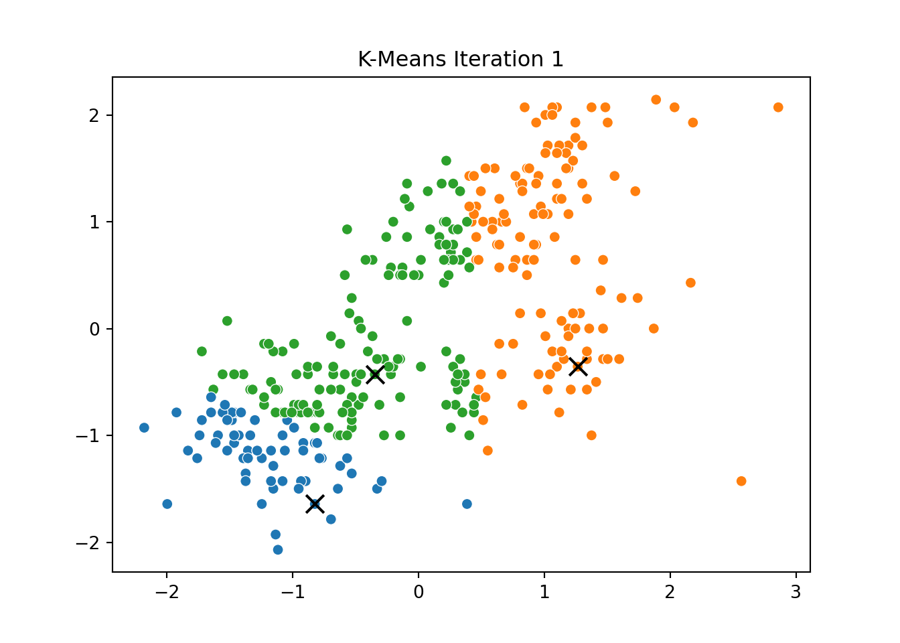
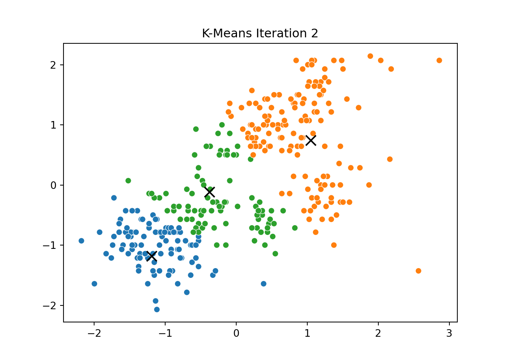
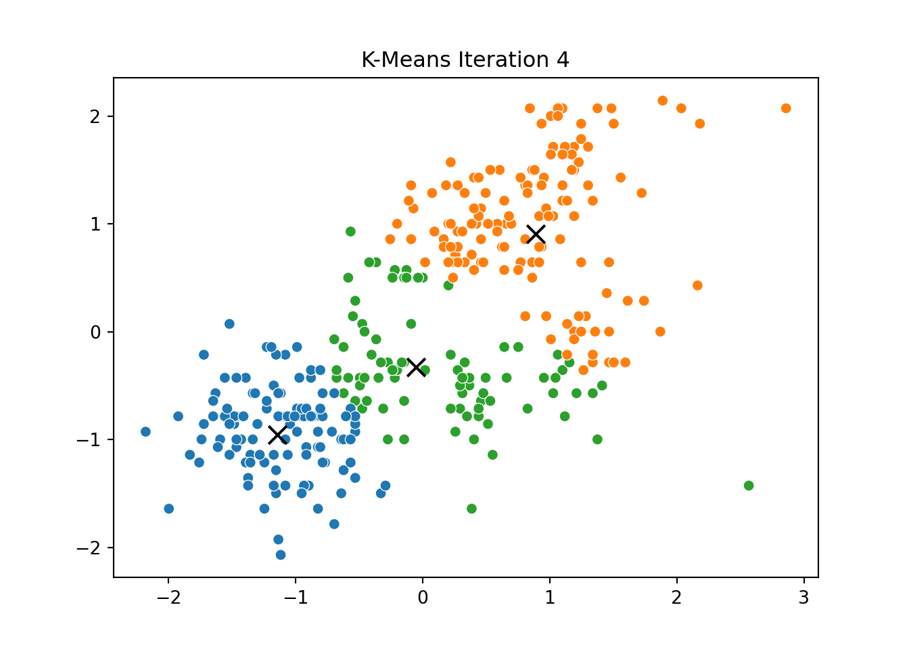
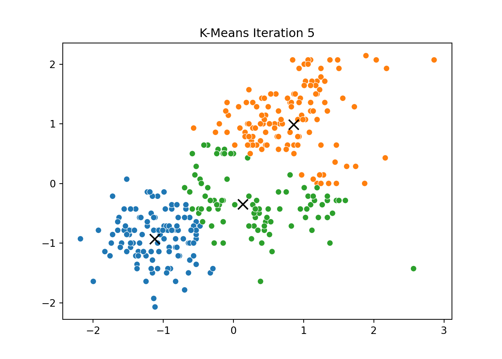


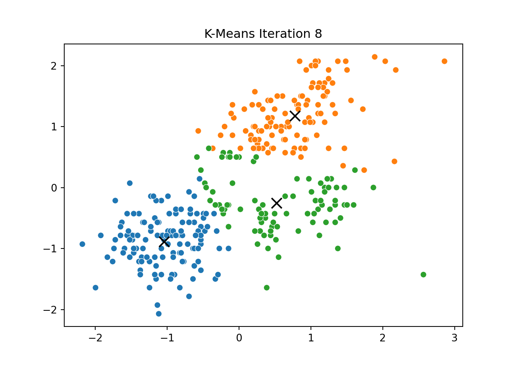
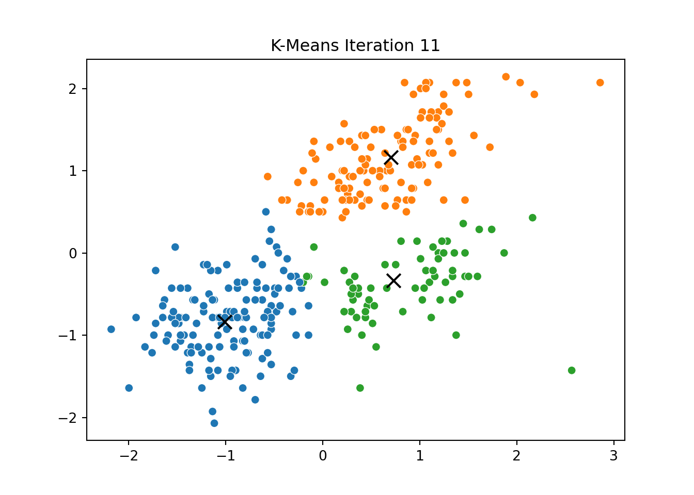
To explore unsupervised machine learning, we implemented the K-Means clustering algorithm from scratch and tested it on the Palmer Penguins dataset. Our focus was on two continuous variables: bill length and flipper length, which are both meaningful physical features of the penguins and tend to separate species well.
We standardized the variables to ensure fair distance computation, initialized cluster centroids randomly, and then iteratively:
Assigned each point to its closest centroid.
Recalculated the centroid positions based on cluster assignments.
This process was repeated for several iterations, and we stored the positions of the centroids at each step to visualize the algorithm’s convergence process.
Below, you can see a series of plots showing how the clusters evolve over time:
Each frame displays the penguins colored by their current cluster assignment, along with the updated centroids marked as “X”.
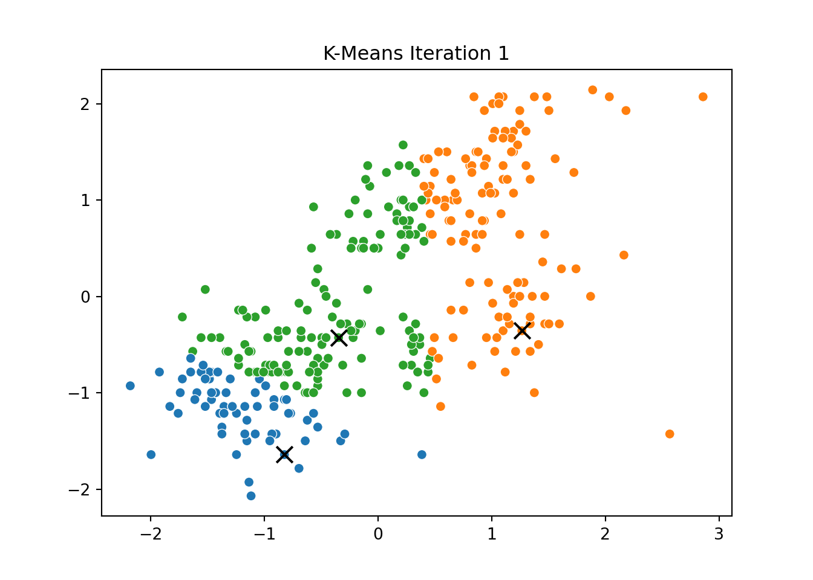
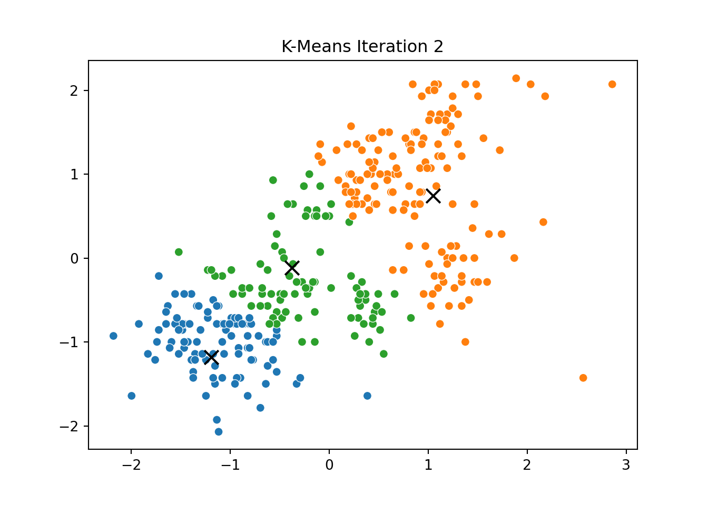
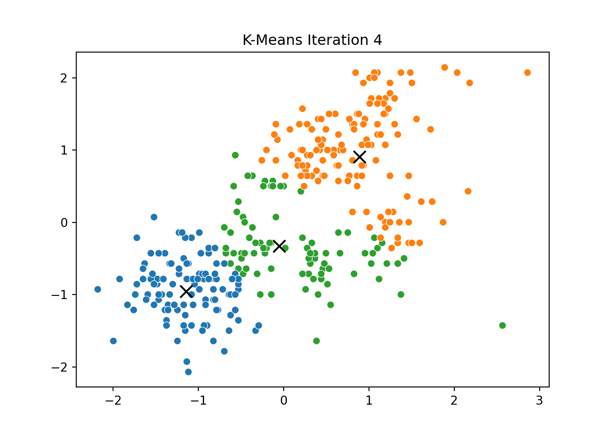
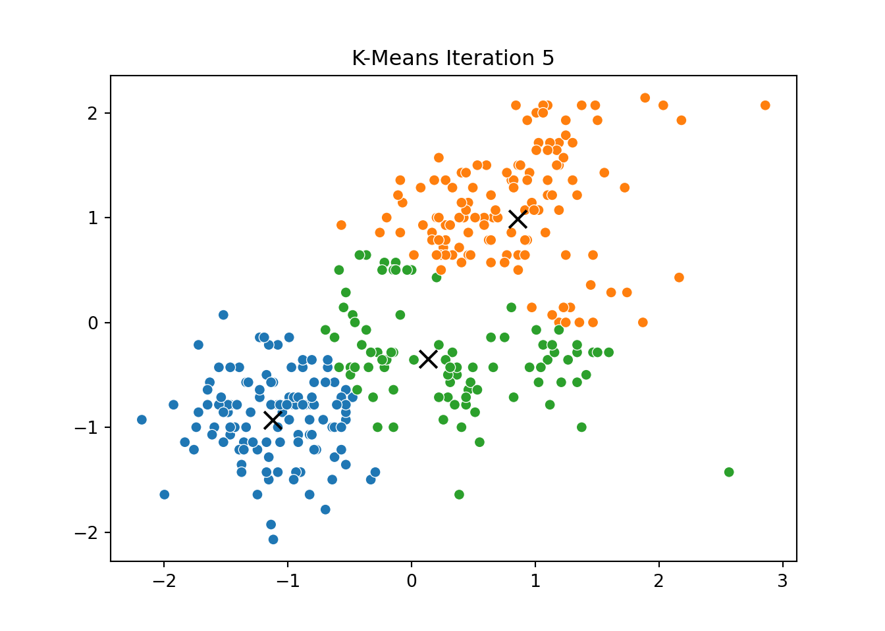
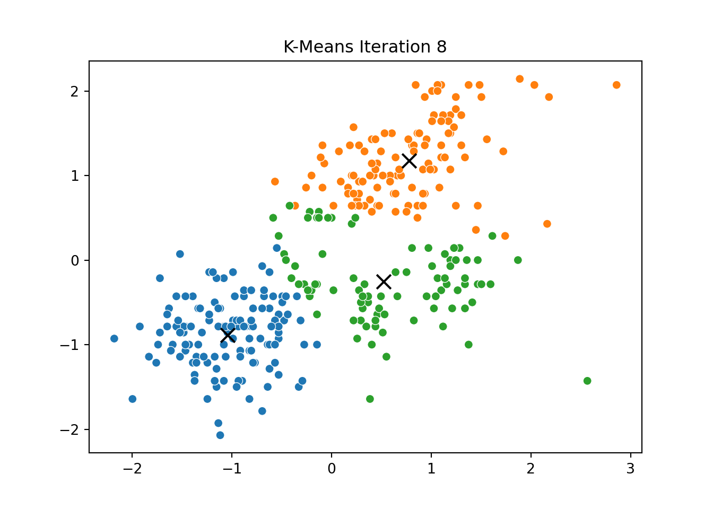
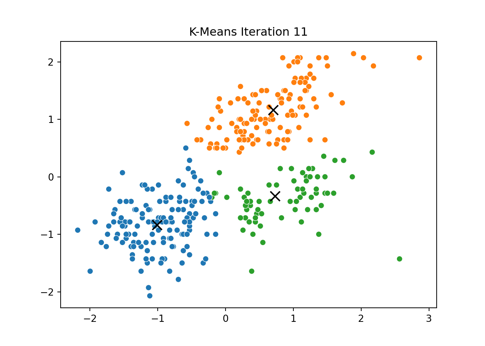
We then compared this to the output of KMeans from scikit-learn and confirmed that the clusters closely matched.
To identify the “right” number of clusters, we calculated two common metrics across values of K from 2 to 7:
Within-Cluster Sum of Squares (WCSS): Measures the compactness of the clusters — lower is better.
Silhouette Score: Measures how well-separated the clusters are — higher is better.
These metrics are plotted below: ::: {.cell} ::: {.cell-output-display} 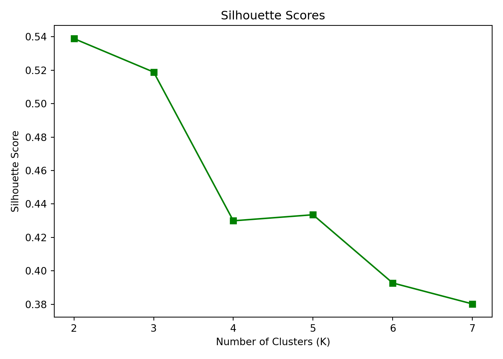 ::: :::
Interpretation: The elbow in the WCSS plot appears at K = 3, suggesting that additional clusters beyond this point provide diminishing returns in reducing within-cluster variance.
The Silhouette Score also peaks at K = 3, reinforcing that three clusters balance separation and cohesion well.
Thus, K = 3 is the optimal number of clusters based on both metrics.
We analyzed which variables are most predictive of the outcome variable y using six different variable importance metrics. These measures help identify which inputs drive the target and guide strategic decisions.
The table below summarizes:
Pearson Correlations (simple linear relationship)
Standardized Regression Coefficients
Usefulness (ΔR²) — change in R² when removing each predictor
SHAP Values — average absolute contribution to prediction
Johnson’s Relative Weights (Epsilon)
Random Forest Gini Importance (note: see comment below)
Pearson Corr Std Coef ... SHAP (mean abs) Johnson's Epsilon
brand -0.049 0.010 ... 0.010 -1.091
id -0.009 -0.013 ... 0.013 0.057
trust 0.256 0.115 ... 0.136 2.918
build 0.192 0.019 ... 0.022 2.791
differs 0.185 0.028 ... 0.029 2.570
easy 0.213 0.023 ... 0.027 3.033
appealing 0.208 0.035 ... 0.040 2.960
rewarding 0.195 0.006 ... 0.007 2.972
popular 0.171 0.017 ... 0.020 2.530
service 0.251 0.088 ... 0.101 3.006
impact 0.255 0.129 ... 0.132 2.742
[11 rows x 5 columns]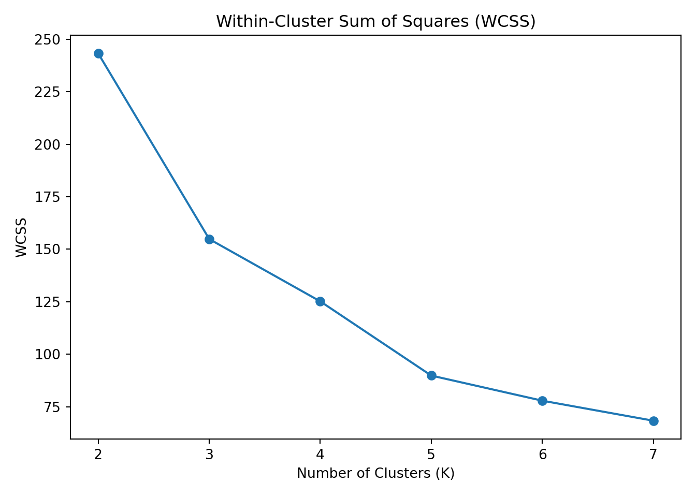
Due to an environment limitation, the Random Forest Gini Importance column could not be computed directly here. However, you can replicate it locally using RandomForestRegressor from sklearn and .feature_importances_.
This would provide a tree-based measure of variable importance.